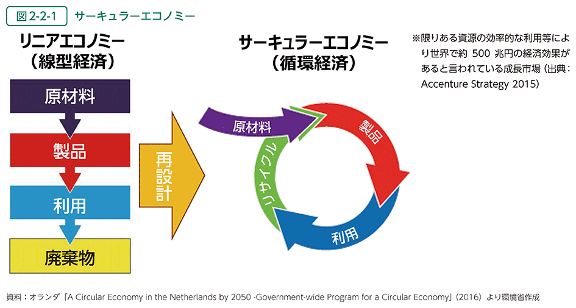
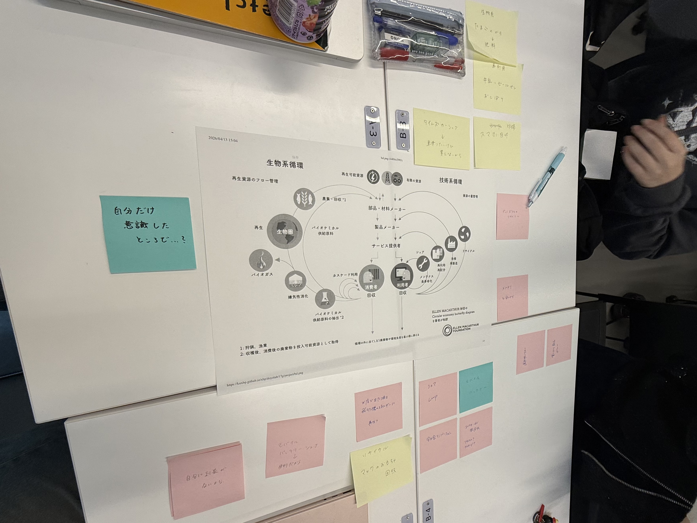

現代のスタンダードとなっている経済の仕組みは、大量生産→大量消費→大量廃棄が一方向に進むリニアエコノミーと呼ばれるものである。 これに対し、近年提唱されているのが廃棄を最小限にする社会経済システムであるサーキュラーエコノミーである。 サーキュラーエコノミーを説明する際にはバタフライ・ダイアグラム」と呼ばれる蝶のような形をした図が用いられる。

左側に生物的サイクル、右側に技術的サイクルが描かれている。生物的サイクルは、地面から上のもの（植物や生物）などを指す。 技術的サイクルは、資源に限りがあるため循環を回す必要がある。 外側に描かれているものの方が環境への負荷が大きく、内側にあるものの循環を優先させるという 見方である。サーキュラーエコノミーにおいて大切となるのは、ものを「捨てる」という考え方から「戻す」に変えることである。
初めに、私たちが利用しているサービスの中でサーキュラーエコノミーに関係するものがないか考えた。具体的に挙げられたものが
・カーシェアサービス
・モバイルバッテリーのシェアサービス
・古いスマホ電池の回収
などの主にシェアリングサービスが多数挙げられた。
次に、自分たちが利用している、していない関係なくサービス、製品がないか考え直した。
その結果挙げられたものが
・ペットボトルのキャップ回収
・服の回収
などが挙げられた。
ここまででさまざまな例を挙げてきたが、私たちが利用したいと思うサービスと興味を持たないサービスの違いはどこにあるのか。 私たちが辿り着いた結論は次の通りである。それは「自分に利益が還元されていると実感するかしないか」である。 カーシェアなどのサービスは目に見えて利益が還元されている一方で、ペットボトルキャップのリサイクルなどは私たちの見えないところで加工などが行われている。 こうなると本当に自分に利益があるのか、また自分だけ意識する意味があるのかといった感情になってしまうと考えた。

環境省 第2節 循環経済への移行
産総研マガジン サーキュラーエコノミーとは？
IDEAS FOR GOOD 社会をもっと良くする世界のアイデアマガジン
サーキュラーエコノミー・ジャパン設立記念カンファレンス 先行事例から学ぶ日本での可能性